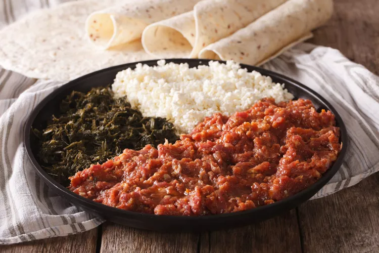

Kitfo

Kitfo: Ethiopian Gurage Dish
A culinary specialty of the Gurage region of Central Ethiopia, kitfo is a rich and flavorful dish made with minced raw lean beef, spices (the classic Ethiopian spice blend known as mitmita), and an herb-infused clarified butter known as niter kibbeh. Kitfo is renowned for its bold flavor and luxurious texture.
Ingredients
- Nitr kibbeh-warm, seasoned clarified butter
- ginger
- Mitmita
- highest quality fresh lean beef,
- garlic
- black cardamom
- koseret
- nigella seed
- caraway seed
- turmeric
- holy basil
Steps:
- Set out a large high-powered food processor. Make sure to trim all the silver skin and fat off the fillet and cut the fillet into large chunks. Place in the food processor.
- Add the cayenne, salt, anchovy paste, garlic powder, and cardamom. Pulse to chop the fillet into fine chunks. You can choose to stop when the beef resembles ¼ inch chunks, or chop smaller into ground steak.
- Once the texture is to your liking, melt the clarified butter and pour over the top. Mix the butter in by hand, do not pulse.